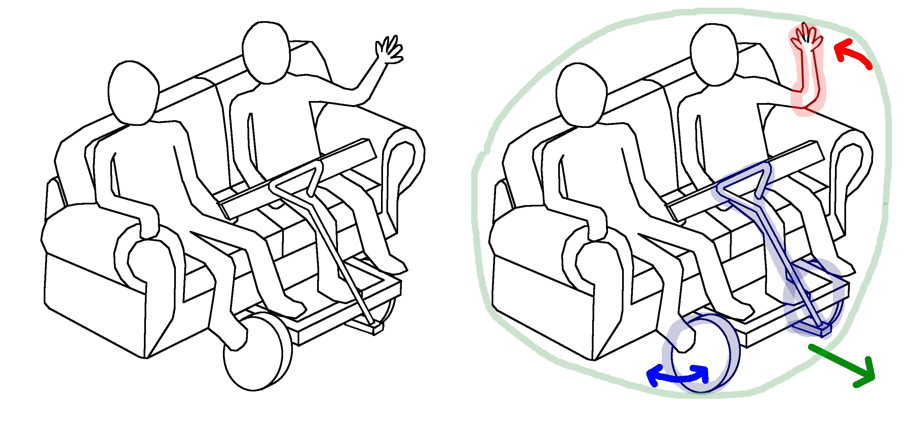
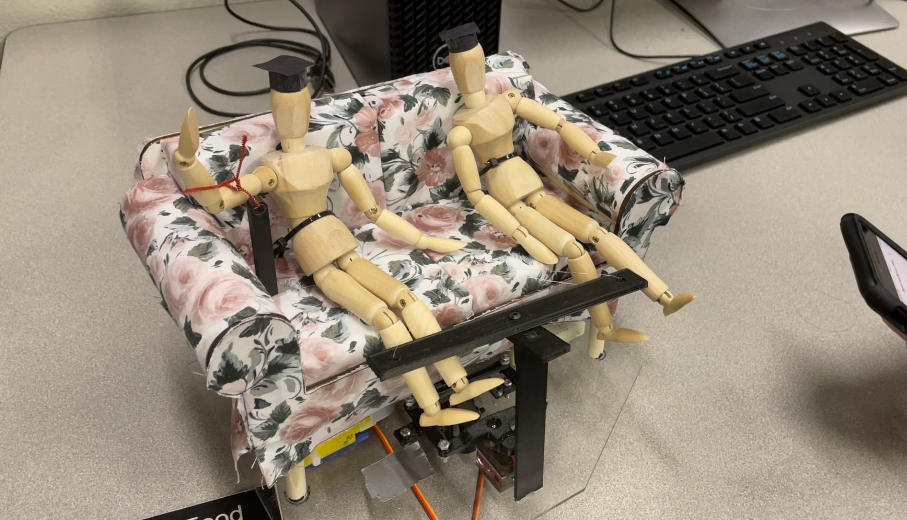
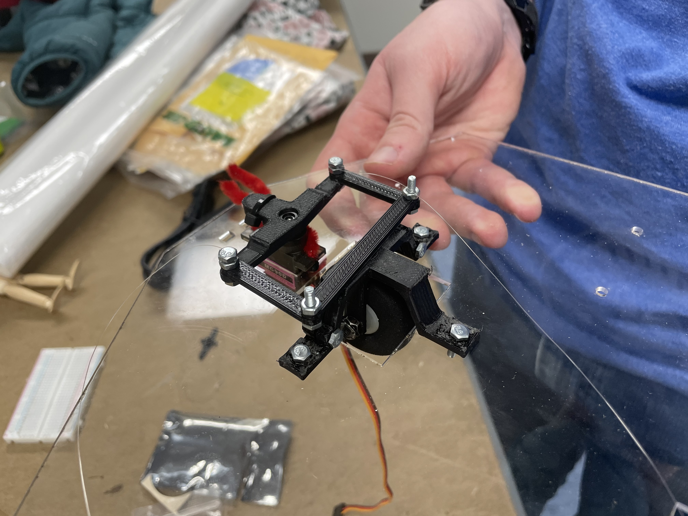

CAD and Prototyping Course
Above: The concept sketch for our toy: a remote-controlled couch cart, inspired by a real life motorized couch cart a recent Purdue graduate built and drove around campus.

Above: The CAD model of the full couch cart toy assembly. The CAD software used in this course was Creo Parametric.

Above: The final prototype with everything assembled. Many parts were fabricated using 3D printing and laser cutting.

Above: A close-up view of the steering assembly, which is powered by a servo motor.